기뢰와 해협 (5) - 로열네이비 최악의 날
게시: 2026-04-09T06:30:46+09:00
영불 연합함대는 1915년 2월 말부터 꾸준히 다다넬즈 해협의 기뢰를 걷어내는 소해 작업을 진행했으나, 거의 성과를 거두지 못함. 주된 이유는 전에 설명한 대로, 위험하기 짝이 없는 2척 1조의 쌍끌이 소해 작업을 트롤 어선에 민간인 선원들을 태워 실시했기 때문. 그것만으로도 소해 작업은 느릴 수 밖에 없었는데, 양쪽 해안의 오스만 투르크군이 고정 포대뿐만 아니라 이동식 150mm 곡사포를 이용하여 소해정에 대해 집요한 방해 사격을 퍼부어 소해 작업은 더욱 지지부진. 견디다 못한 연합함대는 오스만의 방해 포격을 피해 야간 소해 작업도 시도해보았으나 어두운 밤의 소해 작업이 어렵기도 했고, 오스만 포병들은 탐조등을 비춰가며 집요하게 방해했기 때문에 사상자만 내고 결국 포기. 결국 연합함대는 정공법으로 전함들을 해협에 밀어넣어 초근거리 포격을 통해 해안의 오스만 포대들을 제거하고, 이어서 야간에 소해정들을 투입하여 기뢰들을 제거하기로 결정. 그런데 여기서 질문. 전함이 해협에 들어가려면 그래도 대충이나마 어디까지가 확실한 안전 구역인지는 알아야 할텐데, 그걸 어떻게 확인했을까? 그 방법은 놀랍게도 항공기. 흑해는 여러가지 지리생태학적으로 특수한 바다. 도나우(Donau)강, 드네프르(Dnieper)강, 돈(Don)강 등 유럽과 러시아의 대평원을 가로지른 큰 강들의 민물이 흑해로 쏟아지다보니, 흑해는 물이 넘쳐남. 그 물은 보스포러스 해협을 거쳐 마르마라해, 그리고 다다넬즈 해협을 통해 에게해로 쏟아져 나옴. 그렇게 에게해로 흘러 나오는 흑해의 물은 위에서 말한 강에서 유입되는 민물이 많이 섞여 있으므로 염분이 상대적으로 적은 편이고, 또 광활한 농경지와 공업 지대를 지나오면서 엄청난 양의 질소와 인 같은 영양염류가 풍부한 편. 따라서 흑해의 물은 꽤 탁한 편이고, 그래서 투르크어로 Karadeniz (카라데니즈, 검은(북쪽) 바다)라는 이름이 붙은 것.
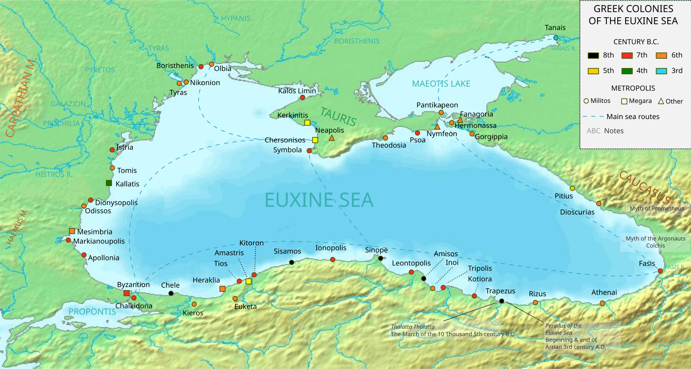
(흑해를 영어로는 Black Sea 또는 Euxine (육신) Sea라고 부름. 여기서 Euxine Sea라는 것은 헬라어의 Pontos Euxeinos (폰토스 에욱세이노스, 친절한 바다)에서 비롯된 이름. 원래는 흑해가 거친 바다라서 항해하기 어렵다고 해서 그리스인들이 Pontos Axeinos (폰토스 악세이노스, 불친절한 바다)라고 불렀는데, 나중에 그 불길한 이름을 피하려고 반어법으로 친절한 바다 폰토스 에욱세이노스가 된 것. 위 지도는 고대 그리스의 식민도시들인데, 가장 유명한 것은 역시 비잔티움과, 그리고 폰투스 왕국의 수도이자 시놉 해전의 격전지였던 시노페(Sinope).)
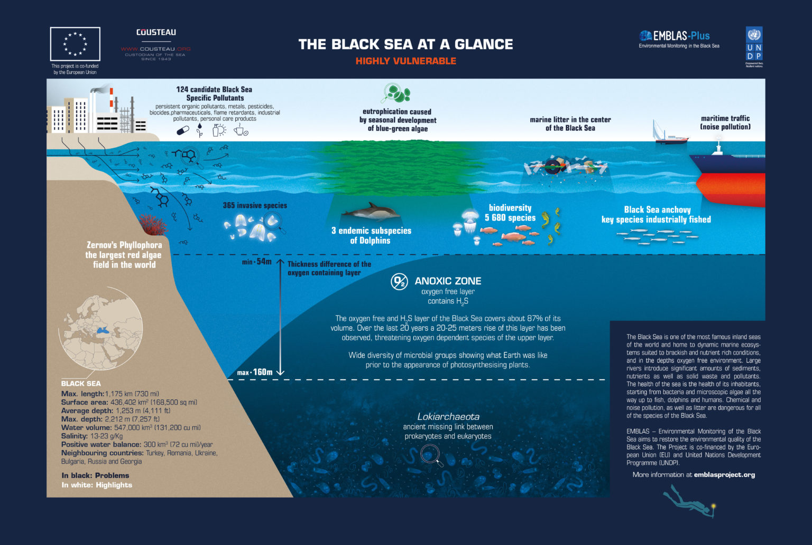
(흑해는 매우 독특하게도, 표층수와 심층수가 매우 상반된 성격을 가지는 바다. 위에서 언급한 대로 유입되는 대량의 강물 때문에 수면층은 소금기가 적고 각종 영양염류가 많으며, 그 표층수가 보스포러스 해협을 통해 에게해로 흘러 나감. 그런데 반대로, 깊은 곳에서는 반대 방향의 해류가 흐름. 즉, 깊은 곳에서는 에게해로부터 더 소금기가 많은 짜고 더 맑은 물이 흘러 들어오는 것. 이렇게 표층수는 상대적으로 더 가벼운 민물이, 심층수는 상대적으로 더 무거운 염수가 유입되는 구조이다보니, 표층수와 심층수 사이에 수직 순환이 거의 일어나지 않음. 이렇게 수직 순환이 안 되다 보니, 표층의 산소가 심층으로 전달되지 못해서 결국 수심 약 150~200m 이하의 심층수는 산소가 완전히 고갈된 무산소(Anoxic) 상태임.)
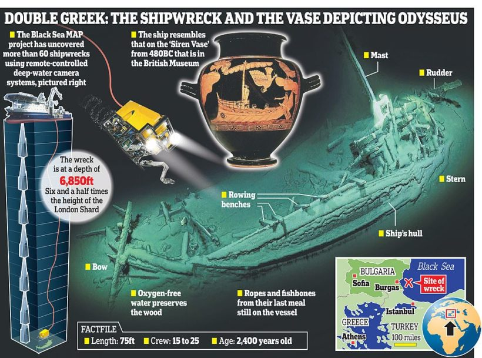
(심층수가 무산소 상태라는 것은 플랑크톤이나 박테리아 같은 생물이 거의 살지 못한다는 뜻이고, 그 결과 수천년 전에 가라앉은 고대 그리스 시절의 화물선도 썩지 않고 보존된 경우가 꽤 있음. 그래서 흑해 심해의 무산소층은 고고학의 보물창고임. 관심 있으신 분들께서는 Black Sea Maritime Archaeology Project 라는 키워드로 검색해보시길.) 그런데 에게해는 흑해와는 달리 영양염류가 적은 '빈영양화(Oligotrophic)' 상태의 바다라 플랑크톤의 번식이 적고, 그만큼 깊은 물 속까지 깨끗이 보이는 맑은 바다임. 다다넬즈 해협의 입구는 에게해의 바닷물과 섞이므로, 상당히 맑고 깨끗한 편. 그 결과... 연합함대의 탄착점 관측을 위해 띄워 올린 함재 수상기의 관측병 눈에, 오스만 해군이 쳐놓은 10줄의 기뢰들이 보였던 것. 아마 수상함에서 내려다 보았다면 태양빛이나 파도 등으로 인해 안 보였을 기뢰들이, 저 높은 하늘에서 내려다보니 보였던 모양. 다만 아쉬웠던 것은 당시엔 무선 통신이 잘 되던 시절이 아니어서, 정찰용 수상기에는 모르스 부호 발신기만 있었을 뿐 음성으로 해상의 소해정과 실시간 통신을 할 수는 없었음. 그러다보니 하늘에서 소해정을 기뢰의 정확한 위치로 유도해줄 수는 없었음.
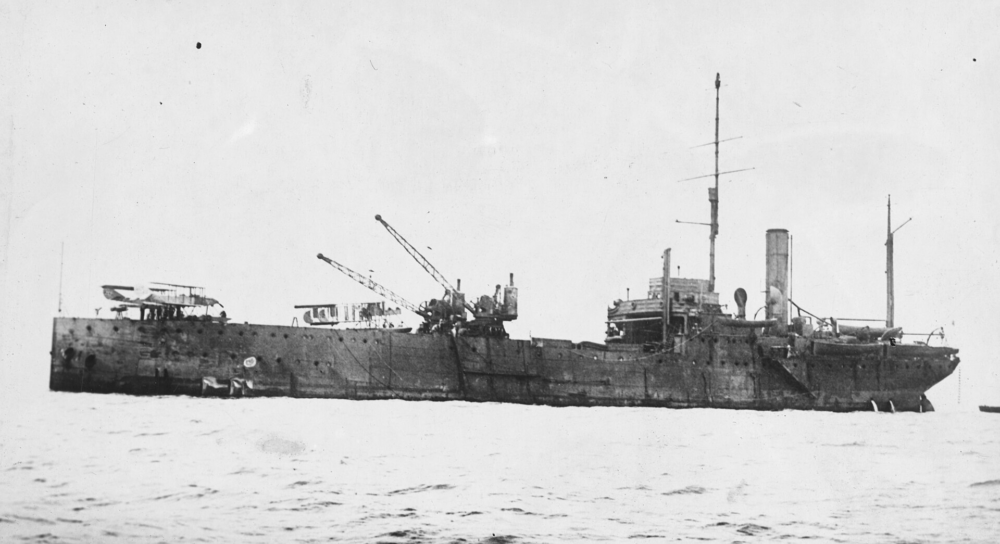
(당시 다다넬즈에 파견된 영국 함대에는 수상기 모함(seaplane carrier)인 HMS Ark Royal(7천톤, 11노트)이 있었음. 캐터펄트나 어레스팅 기어 등이 없던 시절이라서, 크레인을 통해 수상기를 바다 위에 내려놓으면 바다 위를 활주하여 이륙하는 형태. 물론 착륙도 바다 위에 했음. 아크로열이 당시 다다넬즈 작전에 동원되었던 이유는, 속력이 너무 느려서 대서양에서 그랜드 함대를 따라다니며 보조할 수가 없었으므로 지중해로 쫓겨나 있었던 것.)
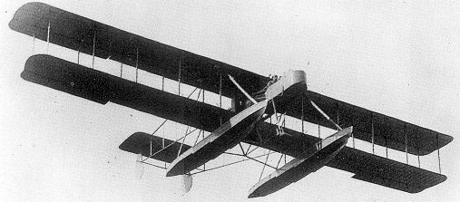
(당시 다다넬즈 해협에서 활약한 수상기들 중 하나인 Wight Pusher. 3월의 다다넬즈 해협 앞에서의 수상기들의 활동은 기술적인 불안정성 때문에 어려움을 많이 겪었음. 가령, 초기의 수상기들은 바다가 너무 잔잔하면 수면에서 이륙을 못하는 경우가 많았는데, 이유는 바다가 너무 잔잔할 경우 수상기의 float(부이)가 표면장력으로 인해 해수면에 착 달라붙어서 수상기가 공중으로 떠오르지 못했던 것. 다다넬즈 작전 처음에는 모든 수상기가 엔진 고장이나 이런 표면장력 문제로 이륙을 못했는데, 그때 유일하게 이륙에 성공한 것이 이 Wight Puhser였음. 결과적으로는 이것조차 별로 안정적인 기체가 아니어서 총 11대만 제작되고 끝남.) 이렇게 함재기를 통해서 어디까지 전함들이 들어가도 안전한지를 확인한 것은 좋았으나, 누스렛호가 해안가를 따라 부설한 기뢰 26기는 함재기들도 미처 찾아내지 못함. 불안정한 초기 수상기를 모느라 긴장했던 조종사들이 기뢰는 당연히 해협을 가로질러 부설되어 있을 것이라고만 생각해서 해안가 쪽은 관찰을 등한히 했을 수도 있고, 혹은 해안가 부근은 해저 바닥 색깔과 겹쳐보인다든지 해서 조종사들의 눈에 안 띄었을 수도 있음. 아무튼 연합함대는 해안가를 따라 세로 방향으로 기뢰들이 설치되었다는 것은 전혀 모른 채 운명의 3월 18일 오전부터 전함들을 해협 안으로 밀어 넣음. 물론 연합함대 수뇌부도 덩치 큰 전함들을 무작정 해협 안으로 구겨 넣은 것은 아님. 영국 함대 2줄, 프랑스 함대 1줄로 해서 총 3열의 함대를 번갈아 가며 해협 안으로 투입하여 오스만군의 해안 포대들을 제압하는 계획. 오전 11시부터 제1열 영국 함대가 들어가서 포격을 시작했고, 이어서 프랑스 함대도 진입. 포격전은 치열했고 영불 전함들도 오스만의 포격으로 피해를 입기 시작. 여전히 연합함대의 포격 효율은 좋지 않아서 오스만 포대들 자체를 파괴하지는 못했지만, 격렬한 제압 포격으로 인해 최소한 오스만 포대들의 포격은 잦아들기 시작. 어지간한 피해를 입은 프랑스 전함들을 빼내고 대기하던 제2열 영국 전함들을 투입하기 시작한 것이 오후 1시 40분 경. 그 명령에 따라 프랑스 전함들은 줄줄이 우현으로 선회하며 다다넬즈 해협의 아시아쪽 해안으로 빠져나가기 시작. 그러던 오후 1시 54분, 그렇게 해협을 빠져나가던 프랑스의 전노급 전함 Bouvet (1만2천톤, 18노트, 1896년 진수)가 돌연 폭발을 일으키며 검붉은 연기를 뿜기 시작. 근처의 구축함들이 구조를 위해 움직이던 중, 불과 2분만에 부베는 전복되며 침몰. 너무나 빨리 침몰했기 때문에 구조된 인원은 불과 75명이었고, 총 643명이 부베와 함께 전사.
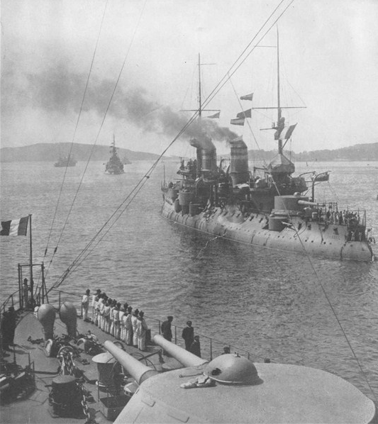 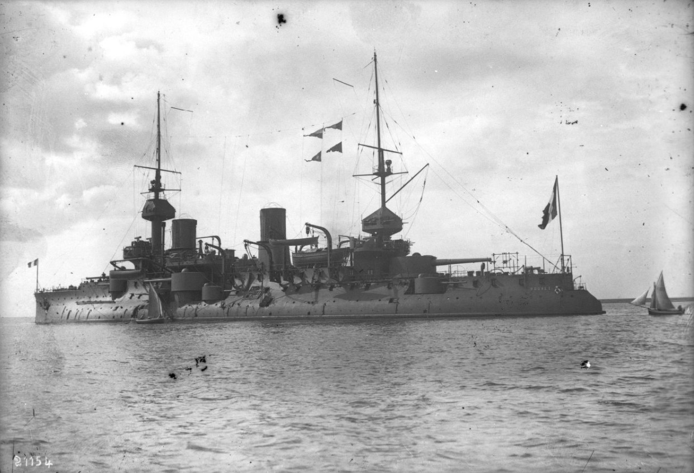
(1914년 다다넬즈에 도착한 프랑스 전함 Bouvet. 상갑판이 좁고 아래로 내려갈수록 폭이 더 넓은 tumblehome 구조를 가지고 있어서, 전형적인 19세기 말 전함의 모습을 보여줌.) 부베는 전노급(pre-dreadnought) 전함으로서 사실 장갑이 그다지 튼실한 편은 아니라고 그 전부터 평가받았음. 가장 두꺼운 부분의 측면 장갑은 400mm 였지만, 갑판 부분은 70mm의 연강(mild steel)로 되어 있었고, 특히 흘수 바로 아래 부분에는 측면 장갑이 없어서 어뢰나 기뢰는 물론 재수가 없는 경우 적 포탄에도 뚫릴 수가 있었음. 가령 파도든 뭐든 부베가 2도만 측면으로 기울면 흘수 아래 장갑이 없는 측면이 물 위로 노출되었는데, 부베가 측면을 향해 일제 포격(broadside)을 실시할 경우 그 충격으로 부베는 3도나 측면으로 기울게 되어 있었음. 그러니까 재수가 없으면 그 순간 측면이 적포탄에 관통될 수도 있었던 것. 그래서인지, 혹은 항공 정찰 보고를 너무 믿었던지, 부베가 폭침한 뒤에도 연합함대 지휘부는 아무도 저것이 보고되지 않았던 새로운 기뢰에 의한 것이라는 생각을 하지 못함. 다들 오스만 해안 포대의 럭키샷이 탄약고에 명중했거나 혹은 해안에 숨겨졌던 어뢰 발사관에서 발사된 어뢰에 얻어맞은 것일 거라고만 추측. 그러다보니, 그런 위협에는 더 격렬한 포격이 답이라고 생각하여 오전부터 수행하던 작전을 그대로 수행했고, 영국 전함 제2열도 그대로 진입시킴. 오후 4시 15분경, 전투 중에 오스만 포격을 받고 손상을 입은 영국 전노급 전함 HMS Irresistible (1만5천톤, 18노트, 1898년 진수)이 해협을 빠져나가기 위해 부베와 거의 동일한 항로로 선회하여 돌아나감. 아니나 다를까, 이리지스터블도 우현에 정체불명의 폭발을 일으키며 30명이 즉사했고, 우측 기관실에 물이 콸콸 새기 시작. 당시 전함들의 흘수선 아래 방어 및 침수에 대한 대비는 그다지 튼실하지 않아서, 바닷물이 2천톤 가까이 들어오자 좌우 기관실을 나누던 기밀벽도 무너졌고 결국 좌현 기관실까지 침수되며 이리지스터블은 동력을 잃고 dead on water 상태가 되어 버림. 이렇게 되자 좋은 점은 한쪽으로 더 기울지는 않아서 7도 기울어진 것에 그쳤지만, 힘없이 조금씩 해안쪽으로 둥둥 떠밀려 가던 이리지스터블은 오스만 해안 포대의 아주 좋은 타겟이 되어 집중 포격을 받음.
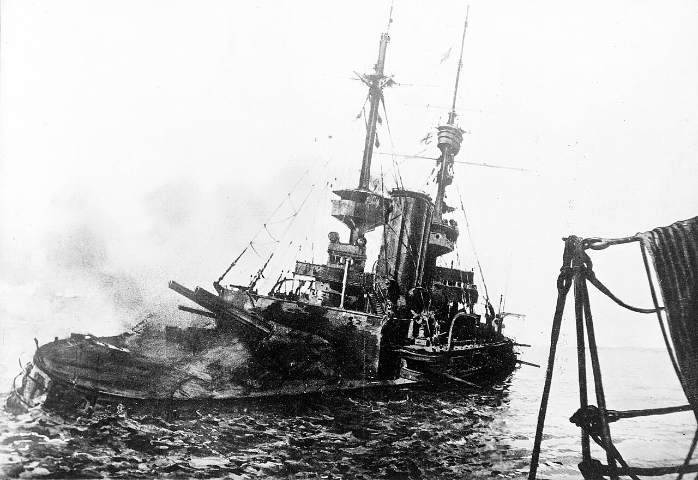
(HMS Irresistible. 건조된 이후 별다른 활약도 해보지 못하고 저렇게 허무하게 꼬로록.)
연합함대 수뇌부는 즉각 구축함을 보내 610명의 승조원들을 구조하고 동시에 전노급 전함 HMS Ocean(1만4천톤, 18노트, 1898년 진수)을 보내 이리지스터블을 케이블로 견인하여 해협 밖으로 끌어내도록 지시. 그러니까 이때까지도 수뇌부는 이것이 여태까지 발견되지 않았던 새로운 기뢰밭이라는 생각을 못했던 모양. 그런데 운이 좋았는지 운이 나빴는지 오션은 그렇게 이리지스터블을 구하러 급히 가다 그만 얕은 바다에서 좌초되어 버림. 오스만 포대들은 신이 나서 오션에도 열심히 포탄을 날림. 한참만에 간신히 좌초된 뻘에서 빠져나왔지만, 이미 이리지스터블은 더 우측으로 기울었고 오스만군의 포격도 너무 심하여, 오션은 견인을 포기하고 빠져나옴. 그러나 그렇게 빠져나오던 오션은 오후 5시경 결국 기뢰에 부딪힘. 오션은 이리지스터블보다 더 심하게 우현으로 15도나 기울었고, 결국 함장은 구조하러 온 구축함들로 대피를 명령하고 배를 포기.
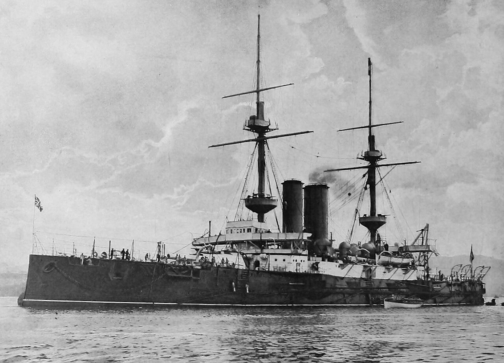
(HMS Ocean. 이 전함도 건조된 이후 딱히 활약한 바가 없으나, 이미 당시에도 낡은 전함으로 분류되었고, 처칠은 이리지스터블이나 오션에 대해 '얼마든지 희생시켜도 상관없는 소모품이니 HMS Queen Elizabeth나 HMS Inflexible만 다치지 않게 조심해달라'고 당부했다고.)
연합함대는 나중에 해가 진 뒤, 이리지스터블과 오션이 오스만군의 손에 넘어가는 것을 막고자 구축함 HMS Jed를 들여보내 어뢰로 자침시키려 함. 그러나 아무리 뒤져보아도 이 두 전함이 보이지 않았음. 알고 보니 그 사이에 침몰해버린 것. 결국 이날 전투는 연합함대의 전함 3척이 격침되고 기타 다수의 전함들이 포격으로 피해를 입는 등 오스만군의 대승. 약간 의외인 부분은, 이날의 참사에 대해 '난 이제 잘렸다'라고 생각한 사람은 연합함대 사령관이던 John de Robeck 뿐이었고, 그 휘하의 제독들이나 해군상 처칠은 그런 손실을 입고도 영국이 전투 목표를 잘 달성 중이며 이 정도 손실은 별 문제가 아니라고 생각. 심지어 격침된 전함들에서 구조된 수병들은 소해정의 민간인들 대신 자신들을 투입해달라고 요청할 정도로 투지는 높았음. 다만 수뇌부는 전함들만으로 기뢰가 깔린 해협을 뚫는 것은 무리였다고 자인했고, 처칠은 육군 사단들을 대거 상륙시켜 먼저 오스만군의 해안 포대들을 제거하기로 작심. 그래서 시작된 것이 바로 4월 25일의 갈리폴리(Gallipoli) 상륙 작전. 그 결과는 다들 아시는 대참사였고, 결국 5월 25일 처칠은 비로소 사임.
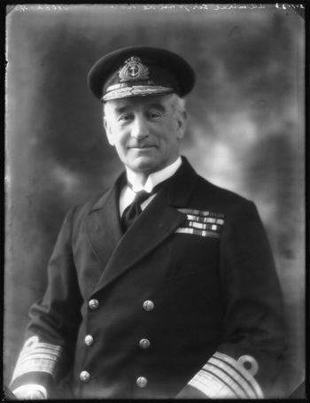
(다다넬즈 해역의 총사령관 John de Robeck 제독. 드 로벡 제독은 의외로 잘리지 않고 끝까지 자리를 지켰을 뿐만 아니라, 기적적인 갈리폴리 철수작전을 성공적으로 해낸 공로로 Bath 기사 작위까지 받음. 전후에는 해군 대장까지 승진한 뒤 1924년에 명예롭게 퇴역.) 이후로도 다다넬즈 해협 인근의 육상과 해상에서 전투는 치열. 특히 오스만 투르크 해군으로 깃발만 바꿔단 독일 잠수함 U-21이 결정적인 역할. 처칠이 사임하던 5월 25일에는 딱 1발의 어뢰로 영국 전함 HMS Triumph를 격침했고, 이틀 뒤인 5월 27일에는 전함 HMS Majestic을 역시 어뢰 단 1발로 격침. 이후 연합함대는 '이 위험한 곳에 전함들을 더 이상 투입하는 것은 무리'라면서 전함들을 모두 후퇴시켰고, 전함들의 함포 지원을 잃은 갈리폴리 상륙군은 더더욱 곤경에 빠짐. 결국 1916년 1월, 패배를 인정한 영국군이 마지막 부대를 철수시키면서 다다넬즈에서 오스만 투르크의 승리가 확정됨.
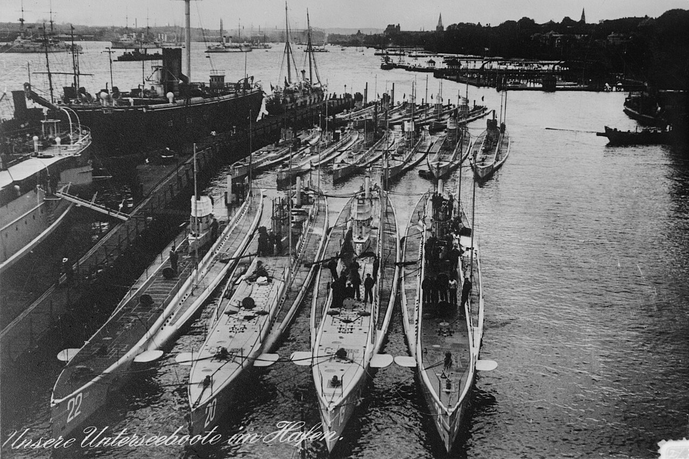
(1914년, U-21을 포함한 독일 U-boat들이 킬(Kiel) 군항에 정박한 모습. U-21은 맨 앞줄 맨 오른쪽의 잠수함. U-21은 어떻게 갈리폴리 근처까지 왔을까? 발트해의 킬 항구에서 출발한 U-21은 영국 북쪽으로 돌아서 스페인의 대서양쪽 서해안으로 내려와 거기서 비밀리에 보급선 SS Marzala를 만나 해상 급유를 받으려 했음. 보급선과의 랑데부에는 성공했으나, 정작 마르잘라가 가져온 디젤유가 품질이 엉망이어서 그걸 급유받았다가는 오히려 큰일날 판. 연료가 절반도 안 남았던 U-21은 결국 연료를 아끼기 위해 위험을 무릅쓰고 부상한 채로 항행을 계속하여 천만다행으로 들키지 않고 지금의 몬테네그로 땅인 오스트리아 항구 Cattaro에 도착. 킬 항구를 떠난지 18일만의 일. 킬에서 출발할 때 연료를 56톤 적재했는데, 카타로에 도착했을 때는 딱 1.8톤 남았었다고.)
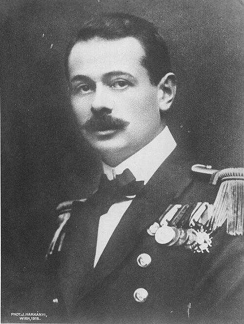
(이렇게 어렵게 오스트리아에 도착한 U-21은 오스트리아 해군의 따뜻한 영접을 받았는데, 그렇게 U-21을 방문한 인사들 중 눈에 띄는 사람은 바로 폰 트랍(Georg von Trapp). 당시 폰 트랍은 오스트리아 해군 대위로서 잠수함 함장으로 활약하고 있었고 연합군 선박 10여척을 격침.)
(물론 아시다시피 그 폰 트랍이 영화 '사운드 오브 뮤직'의 그 폰 트랍(크리스토퍼 플럼머가 열연).)
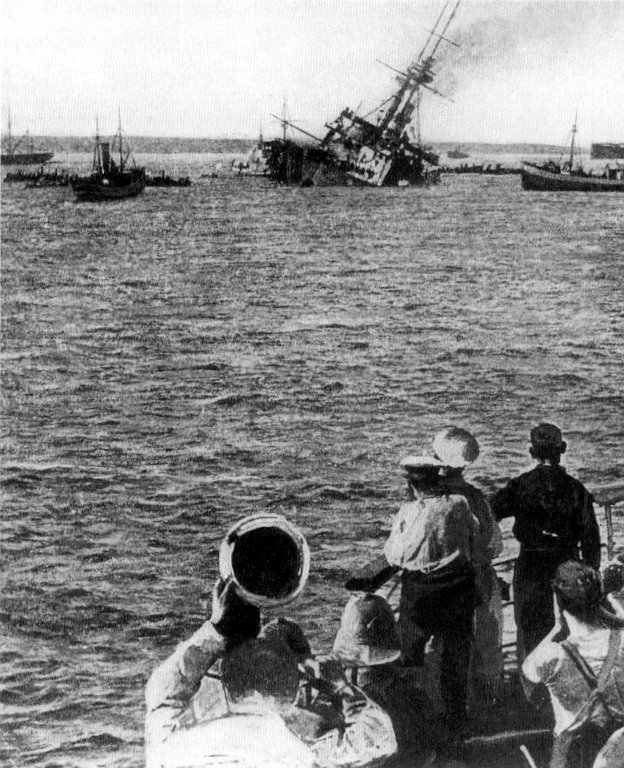
(1915년 5월 27일, U-21에게 격침되는 HMS Majestic의 모습.)